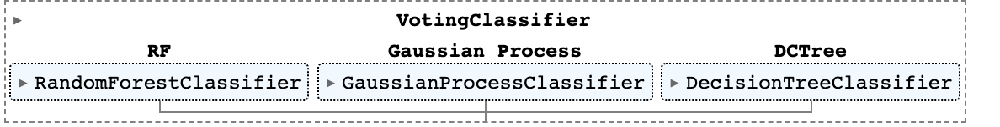

Documentation
Welcome to Team 4's CLI Documentation
To use the CLI, you need to launch the following command:
python main.py
To get an overview of the commands and functions available, you can run:
python main.py --help
To use one of the availible commands f.e. use:
python main.py correlations
Commands
An overview of all functionalities is provided in the following section.
Preprocess the Trainingdata
python main.py pre_processing
This command will start the preprocessing training data.
The files must be named traindata_(number).tar.gz . F.e. traindata_1.tar.gz.
It looks for 5 files, doesn't take less or more than that.
Parameters:
| Name | Type | Description | Default |
|---|---|---|---|
1 |
GUI
|
You'll be asked by a GUI to choose the folder from where the zipped files can be accessed. |
required |
Returns:
| Name | Type | Description |
|---|---|---|
features |
CSV
|
It will save the converted files as features.csv in output/ |
Source code in Program/main.py
57 58 59 60 61 62 63 64 65 66 67 68 69 70 71 72 73 74 | |
For the sourcecode of the pre-processing of the training data look here:
Source code in Program/preprocessing.py
19 20 21 22 23 24 25 26 27 28 29 30 31 32 33 34 35 36 37 38 39 40 41 42 43 44 45 46 47 48 49 50 51 52 53 54 55 56 57 58 59 60 61 62 63 64 65 66 67 68 69 70 71 72 73 74 75 76 77 78 79 80 81 82 83 84 85 86 87 88 89 90 91 92 93 94 95 96 97 98 99 100 101 102 103 104 105 106 107 108 109 110 111 112 113 114 115 116 117 118 119 120 121 122 123 124 125 126 127 128 129 130 131 132 133 134 135 136 137 138 139 140 141 142 143 144 | |
Correlations Map
python main.py correlations
This command will print you a nice heatmap from which you can read the correlations between the datas features.
Parameters:
| Name | Type | Description | Default |
|---|---|---|---|
1 |
GUI
|
You'll be asked by a GUI to choose the corresponding CSV from which the graph will be build. |
required |
Returns:
| Name | Type | Description |
|---|---|---|
correlation_map |
PNG
|
Returns an heatmap, saved in output/correlation_map.png |
Source code in Program/main.py
32 33 34 35 36 37 38 39 40 41 42 43 44 45 | |
How the heatmap might look like:

For the sourcecode of the heatmap look here:
Source code in Program/correlation.py
14 15 16 17 18 19 20 21 22 23 24 25 26 27 28 29 30 31 32 33 34 35 36 37 | |
Make a Gridsearch
python main.py grid_search
This command will print the best parameters for the Deciscion Tree and Random forest models.
Parameters:
| Name | Type | Description | Default |
|---|---|---|---|
1 |
GUI
|
You'll be asked by a GUI to choose the corresponding CSV from which the models will get fitted. |
required |
Source code in Program/main.py
47 48 49 50 51 52 53 54 55 | |
For the sourcecode of the grid search look here:
Source code in Program/gridsearch.py
28 29 30 31 32 33 34 35 36 37 38 39 40 41 42 43 44 45 46 47 48 49 50 51 52 53 54 55 56 57 58 59 60 61 62 63 64 65 66 67 68 69 70 71 72 73 74 75 76 77 78 79 80 81 82 83 84 85 86 87 88 89 90 91 92 93 94 | |
Preprocess the Testdata
python main.py pre_processing_eval
This command will start the preprocessing for the test data.
The files must be named testdata_(number).tar.gz . F.e. testdata_1.tar.gz .
It looks for 5 files, doesn't take less or more than that.
It will save the converted files as eval.csv in output/ .
Parameters:
| Name | Type | Description | Default |
|---|---|---|---|
1 |
GUI
|
You'll be asked by a GUI to choose the folder from where the zipped files can be accessed. |
required |
Returns:
| Name | Type | Description |
|---|---|---|
eval |
CSV
|
It will save the converted files as eval.csv in output/ |
Source code in Program/main.py
76 77 78 79 80 81 82 83 84 85 86 87 88 89 90 | |
For the sourcecode of the pre-processing of the test data look here:
Source code in Program/preprocessing_eval.py
19 20 21 22 23 24 25 26 27 28 29 30 31 32 33 34 35 36 37 38 39 40 41 42 43 44 45 46 47 48 49 50 51 52 53 54 55 56 57 58 59 60 61 62 63 64 65 66 67 68 69 70 71 72 73 74 75 76 77 78 79 80 81 82 83 84 85 86 87 88 89 90 91 92 93 94 95 96 97 98 99 100 101 102 103 104 105 106 107 108 109 110 111 112 113 114 115 116 117 118 119 120 121 122 123 124 125 126 127 128 129 130 131 132 133 134 135 136 137 138 139 140 141 142 143 144 145 146 147 148 149 150 151 152 153 154 155 156 157 158 159 160 161 162 163 164 165 166 167 168 169 170 171 172 173 | |
Train the Votingclassifier
python main.py votingclassifier
Votingclassifier setup in Sci-Kit learn:

This command will start the training of the voting classifier.
The classifiers parameters are HARDCODED and can only be changed via editing the voting_classifier.py file!
Once the model is build it will print a F1-score.
The command will save the trained model to output/voting_clf.sav .
With the saved model you'll be able to appply the model to a test dataset.
| Classifiers | Weight |
|---|---|
| Decision Tree | 1 |
| Random Forest | 1 |
| Gaussian Process Classifier | 1 |
Training the model will take some time!
Parameters:
| Name | Type | Description | Default |
|---|---|---|---|
1 |
GUI
|
You'll be asked by a GUI to choose the features.csv file for training the model. |
required |
Returns:
| Name | Type | Description |
|---|---|---|
voting_clf |
Pickle / sav
|
The command will save the trained model to output/voting_clf.sav . |
Source code in Program/main.py
92 93 94 95 96 97 98 99 100 101 102 103 104 105 106 107 108 109 110 111 112 113 114 115 116 117 118 119 | |
For the source code of the voting classifier look here:
Source code in Program/voting_classifier.py
30 31 32 33 34 35 36 37 38 39 40 41 42 43 44 45 46 47 48 49 50 51 52 53 54 55 56 57 58 59 60 61 62 63 64 65 66 67 68 69 70 71 72 73 74 75 76 77 78 79 80 81 82 83 84 85 86 87 88 89 90 91 92 93 94 95 96 97 98 99 100 101 102 103 104 105 106 107 108 109 110 111 | |
Apply the model
python main.py applymodel
This command applies the previously trained model to your churn_predictions.csv file.
Parameters:
| Name | Type | Description | Default |
|---|---|---|---|
1 |
GUI
|
You'll be asked by a GUI to Pick the csv where you want to apply the model to. |
required |
2 |
GUI
|
You'll be asked by a GUI to pick the model you want to predict with." |
required |
Returns:
| Name | Type | Description |
|---|---|---|
churn_predictions |
CSV
|
Returns a labeled csv to output/churn_predictions.csv |
Source code in Program/main.py
16 17 18 19 20 21 22 23 24 25 26 27 28 29 30 | |
For the source code of the apply model function look here:
Source code in Program/apply_model.py
10 11 12 13 14 15 16 17 18 19 20 21 22 23 24 25 26 27 28 29 30 31 32 33 34 35 36 37 38 39 40 41 42 43 44 45 46 | |